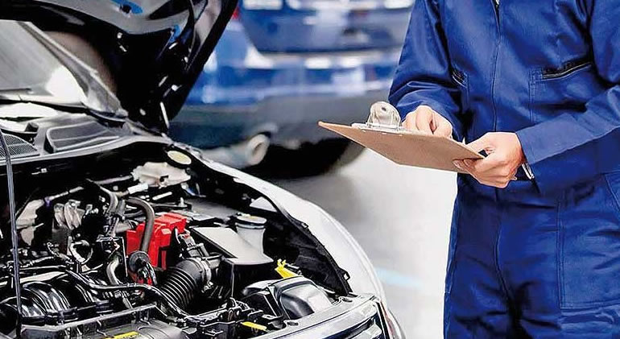

SERMAIN S.A. DE C.V.
Mecánico automotriz liviano y pesado
• Diagnosticar, reparar fallas mecánicas en equipo liviano.
• Diagnosticar y reparar fallas mecánicas en equipo pesado.
• Brindar auxilios en carretera.
• Poseer herramientas básicas propias.
Acceder

Continental Motores SA de CV
Auxiliar de Mecanica
-Coordinación con clientes, ubicación, fecha y horario que se dará el servicio.
- Revisión constante de equipo de protección
- Coordinación de Mantenimientos Preventivos a zona occidente.
- Administración de vehículo y herramientas que estén en buenas condiciones
- Coordinación con fuerza de ventas de sucursal Sonsonate en atención de clientes
Acceder